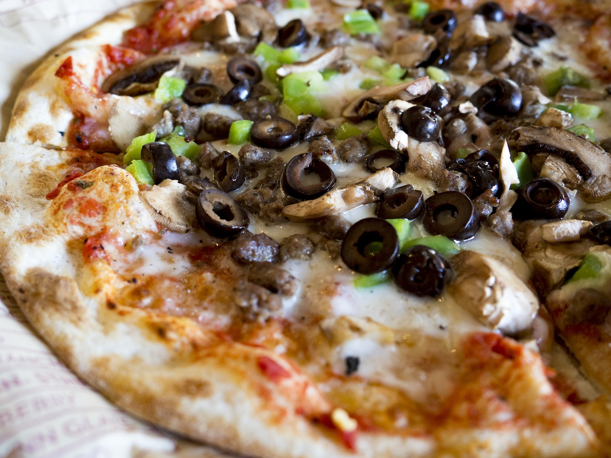

New York Style Pizza

Party Food
Pizza is a classic go-to meal, especially for parties. This recipes is fun and easy to make for a large party, or freeze the left over dough for later. With a little prep the night before this recipe is a breeze.
Ingredients
Pizza Dough
- 2.5 cups plus 1.75 tablespoons (617g) lukewarm water
- 1.5 tablespoons (14g) instant yeast
- 6 cups plus 1/3 cup (950g) all-purpose flour
- 3.25 teaspoons (19g) fine sea salt
- 2 tablespoons (25g) granulated sugar
- Olive oil for dough
Sauce & Cheese
- 2 tablespoons (24g) extra virgin olive oil
- 3.5 tablespoons (49g) unsalted butter
- 4 cloves garlic, sliced
- 1 teaspoon (2g) red pepper flakes
- 28oz (794g) can of crushed tomatoes
- 1 onion, sliced in half, leaving the root attached
- 1 tablespoon (13g) granulated sugar
- 1.5 teaspoons (2g) dried oregano
- 1 teaspoon (1g) dried thyme
- Salt & Pepper to taste
- 1.5 lbs (680g) low moisture mozzarella, coarse grated